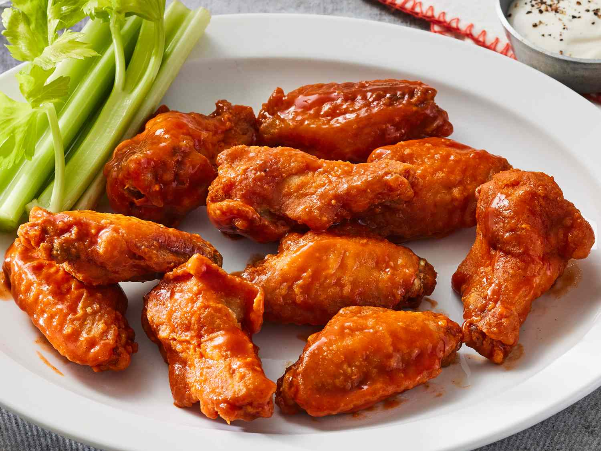

Are you looking for good eats at UNCG? Well, that's a pretty tough thing to find around here. But we have SOME shining stars among the options available. Join me on a taste testing adventure around UNCG and find my favorite spots. I will also highlight my favorite dishes from each of these spots to give you
Old Town Draught House
This restaurant is a staple of the UNCG community. This is my personal favorite, with a fully stocked bar and made to order food. This is the perfect place to grab food at the end of a long school day or hang out with your friends at the end of the week.
1205 Spring Garden St, Greensboro, NC
Hours: 11:00 AM - 11:00 PM
Specialties: Bar food such as chicken tenders and sandwiches.
Chicken Tenders
Fried chicken tenders, my personal favorite dish at Old Town.

Wings
Fried wings tossed in a sauce of your choice, a crowd favorite on game day.

Firecracker Shrimp
Spicy fried shrimp in a chinese inspired sauce. Skimpy on portions, just get as a snack.
Happy Bowl
This is our asian grill offering here at UNCG, it's known to be a good spot to get a lot of food for a good price.
1201 W Gate City Blvd, Greensboro, NC
Hours: 11:00 AM - 9:30 PM
Specialties: Bowls, japanese offerings such as tempura and Poke Bowls.

Hibachi Steak and Shrimp
Grilled beef and shrimp in a fried rice bowl with onions and various vegetables.
Salmon Poke Bowl
Raw salmon chunks in a bowl over your choice of rice and toppings. It's more expensive than it should be.
Kimchi Noodle Bowl
Noodles with cheese, kimchi and a fried egg served with broth on the side. This is my favorite from this spot.
Bojangles
This restaurant is a chain restaurant very popular here in the south for their fried food. This is one of the most beloved to-go foods on campus for sure.
1501 Spring Garden St, Greensboro, NC
Hours: 5:30 AM - 10 PM
Specialties: Fries, fried chicken, sweet tea.
Fried Chicken Sandwich
Breaded chicken patty in a brioche bun. This is a super solid choice when going for the first time.
Cajun Filet Biscuit
Cajun battered chicken biscuit. This is probably the most famous breakfast item down south, for good reason.
Chicken Supremes
These are my go to at Bojangles, just plain chicken tenders.